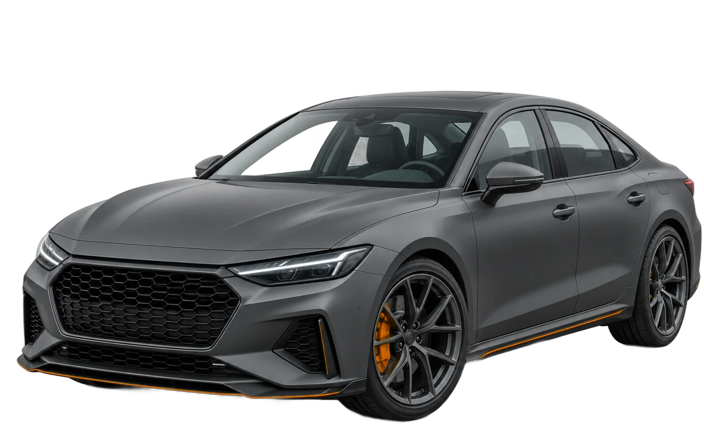
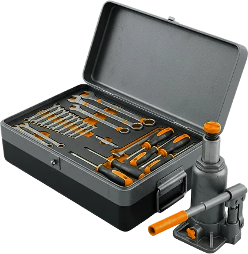

I
Irina Hell.25 мая 2026
Ехала из Питера, у гостиницы развалился натяжитель ремня генератора. Эвакуатор приехал через 30 минут, починили быстро и качественно.
Минск, пр-т Машерова, 25, корп. 1
Ремонт и ТО без выходных, с 8:00 до 20:00. Диагностика — 0 BYN при ремонте у нас.

От 60 BYN
Круглосуточно
Цены в белорусских рублях.
Диагностика неисправности бесплатно при дальнейшем ремонте. Точную цену назовём после осмотра.
ЗаписатьсяЕхала из Питера, у гостиницы развалился натяжитель ремня генератора. Эвакуатор приехал через 30 минут, починили быстро и качественно.
Ехал из Москвы, услышал шелест под капотом. Сразу нашли незатянутый ролик натяжителя и неисправную помпу, починили оперативно.
Накрылась муфта глушителя — записали на тот же день, посмотрели и поменяли. Всё слаженно и быстро.
По дороге в Минск сломалась коробка передач. Механик принял в выходной, за 5 дней коробку сняли, пересобрали и настроили — смогли продолжить путь.
Спасибо Илье и мастерам: сделали качественно и в срок, провели диагностику подвески и даже помыли машину на соседней мойке.
Листайте вбок →
Бесплатно, если ремонтируете у нас в день обращения
При любом обслуживании проверяем уровень масла, охлаждающей и тормозной жидкости
Комплексная проверка автомобиля
Уточняйте актуальность по телефону.
Условия гарантии расскажем по телефону
Выгодные условия на все виды услуг
Подберём запчасти, посчитаем стоимость ремонта и быстро привезём
Телефон, Viber или Telegram
Подскажем, сколько будет стоить
пр-т Машерова, 25, корп. 1
